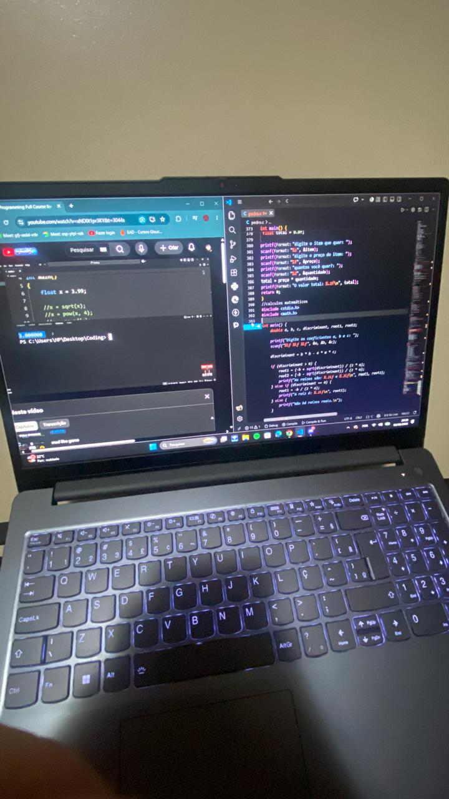
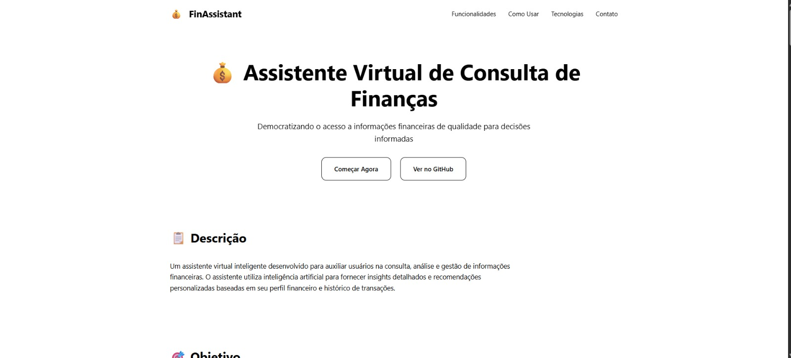
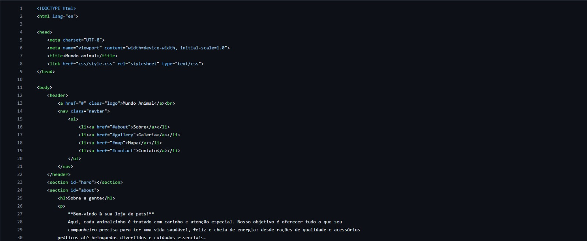
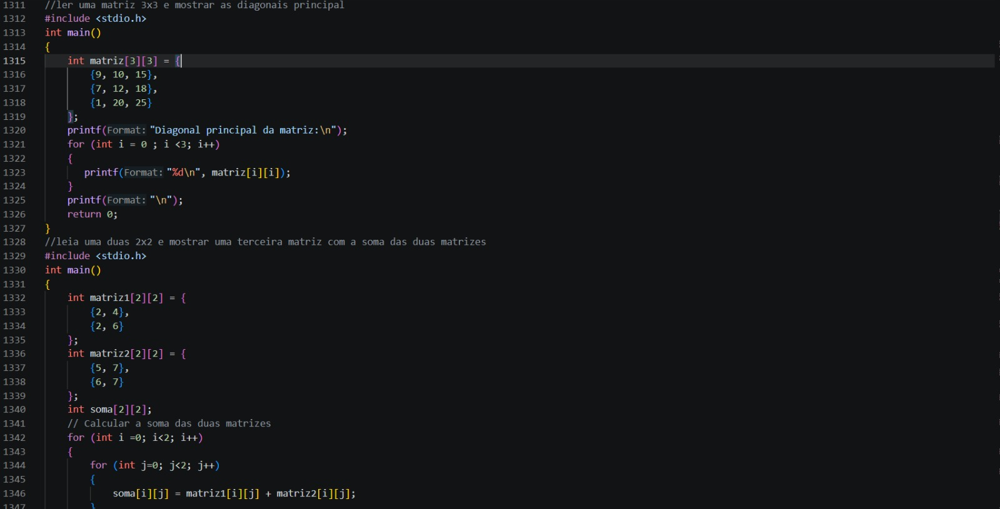
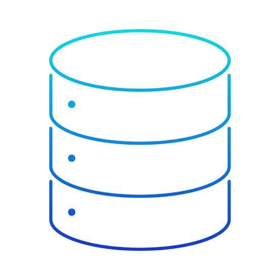
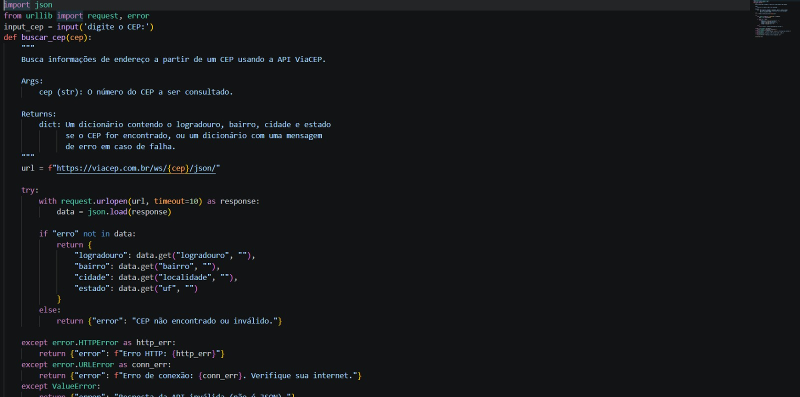
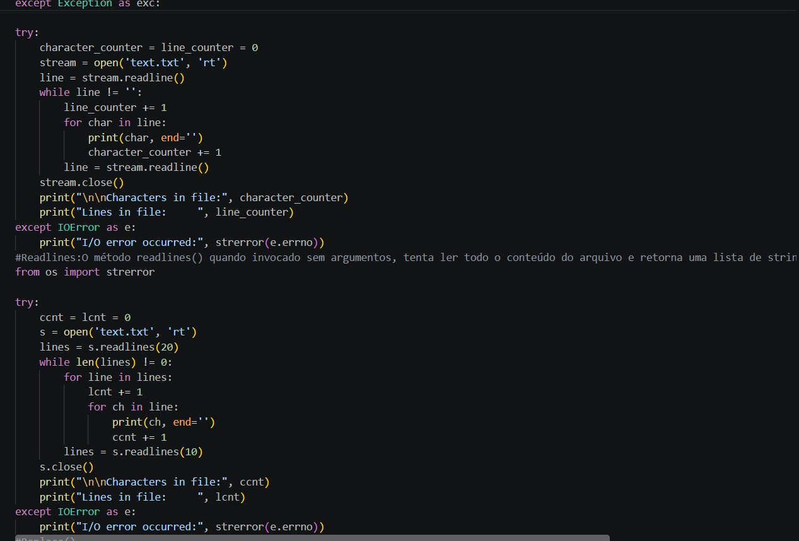
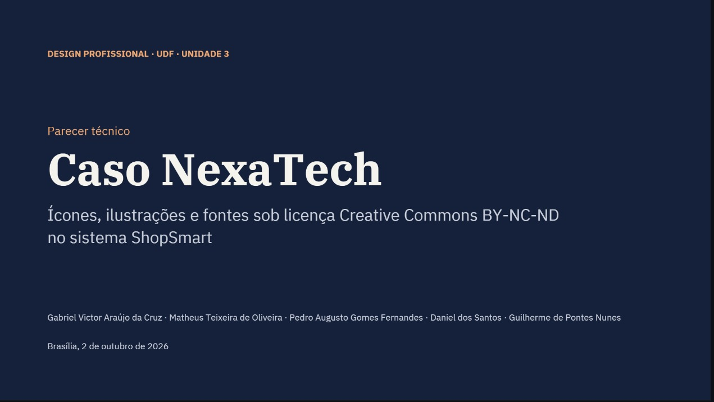

Monitoria para idosos na UDF
Apoio à inclusão digital de idosos
- Comunicação com usuários
- Solução de problemas técnicos
- Apoio ao atendimento
- Experimentação com SOs diferentes (windows, Linux, macOS)
Brasília, DF · Engenharia de Software
Sempre em busca de novos desafios e aprendizados.
Estudo Engenharia de Software na UDF e faço monitoria para inclusão digital.

Após me formar no colégio, eu comecei a estudar para as carreiras militares, porém eu decidi seguir uma área que eu sempre tive interesse: a tecnologia.
Durante esse tempo eu ainda ensinava para alunos de ensino médio por meio de aulas particulares, assim eu aprendi desde cedo em ensinar às pessoas.
Estou no começo da formação em Engenharia de Software e ainda tenho muito a aprender, mas chego com uma vantagem: conheço de perto os problemas que um sistema precisa resolver.
Eu quero poder fazer a diferença à sociedade por meio da tecnologia, por isso eu sempre busco me dedicar e me tornar bem no que eu faço.


Da experiência mais recente para a primeira.
Apoio à inclusão digital de idosos
autônomo . Atendendo alunos do CMB
UDF · 2º semestre
MongoDB University
Cisco Networking · 40 horas
Cisco Networking · trilha de 40 horas · 5 módulos
Progresso: 2/5 módulos
Fora da faculdade estudo programação, Segurança de TI e estudo de networking.
Sem porcentagens: cada item mostra de que forma tive contato com ele até agora.
Trabalhos reais dos meus repositórios. Boa parte é estudo, e estão aqui para mostrar a minha evolução.

Assistente virtual de finanças pessoais com IA, feito em dupla na matéria de Gestão de Projetos.
Página de apresentação de um assistente de finanças pessoais com IA, feita na matéria de Gestão de Projetos. É uma proposta de produto, não um aplicativo pronto.
Com Gabriel Victor Araújo da Cruz


Códigos das aulas de HTML, CSS, JavaScript e Bootstrap, com estrutura de páginas, grid e colunas responsivas.

Exercícios de decisão, repetição, vetores e funções, além de atividades como controle de estoque com menu e desempenho de turma.

aqui estão os projetos que fiz com o Banco de Dados.

Atividades sobre tokens e qualidade de prompts, além de notebooks de programação assistida e automação com IA.

Listas de exercícios em Python feitas em aula: condicionais, par ou ímpar, maioridade, desconto e média com aprovação.

Seminário de Design Profissional sobre ética, cidadania digital e direitos, com slides, roteiro de fala e parecer técnico.
Com Matheus, Gabriel, Daniel e Guilherme
Aqui estão as formas de entrar em contato, principalmente para falar sobre estágio e projetos.